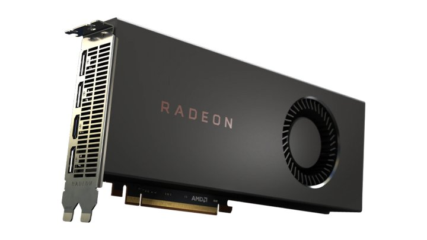

مهما تكن تجميعة الحاسوب التي تنوي بناءها أو شراءها، سواء للألعاب أو العمل، منخفضة الميزانيّة أو مرتفعة التكلفة، فإنّ كرت الشاشة هو ـ على الأرجح ـ القطعة الأكثر أهميّة، وفي الوقت الذي تميل فيه حتّى أرخص كروت الشاشة لتكون مرتفعة السعر هذه الأيّام بشكل خاص، فقد تجد نفسك أمام تحدّ كبيير لتجد ما يلائم ميزانيّتك ويقضي احتياجاتك في نفس الوقت. إن لم تتدبّر أمرك جيّدًا وتحسم اختياراتك وتحدّد أولوياتك، فقد تجد نفسك أمام معضلة. في بعض الأحيان، قد تجد أن بطاقة الرسومات لوحدها تكلف مجموع ما أنفقت على سائر قطع ومكوّنات الحاسوب، وتلك معادلة لا ينبغي أن تضع نفسك فيها أبدًا.
عمومًا، أنت لست هنا بالطبع باحثًا عن أقوى كروت الشاشة في السوق لتشغيل لعبة Cyberpunk 2077 على دقة 4K بمعدّل 120fps، بل تفكّر بأفضل الموجود في السوق ليلائم ميزانيتك المحدودة. الخبر الجيّد هنا هو أنّ هنالك الكثير من الخيارات، وبهوامش أسعار مناسبة، ولست في موضع قلق من فشل التجميعة، ولن تضطرّ للتضحية بمكوّن ما أو الإنفاق على مكون لحساب الآخر، فقط حدّد ما تريد، وحاول جاهدًا رصد الصفقة الأفضل.
في المقال هنا، نقدّم إليك قائمة بأرخص كروت الشاشة في السوق، والتي تشمل كلّ فئات المستخدمين محدوديّ الميزانيّة، ولا تستغرب كون معظمها يعود لأجيال سابقة، إذ إنّ الفئات السعريّة لبطاقات اليوم مرتفعة نسبيًّا عمّا كانت عليه قبل عامَين، ناهيك عن أنّ النقص الحاصل في توريدات الشرائح عالميًّا، وافتراس معدّني العملات الرقميّة لأغلب نتاج شركات تصنيع وحدات المعالجة الرسوميّة، وعوامل أخرى، جعلت من الحصول على إحدى كروت الشاشة الجديد أمرًا بالغ الصعوبة، وإن صدف ووجدتها، فستكون بأسعار خياليّة.
تجدر الإشارة إلى أنّ القائمة أدناه تشمل كروت الشاشة المستقلة (أو المنفصلة) فقط، من شركتَي Nvidia وAMD، ولا يمكن جمعها مع وحدات المعالجة الرسوميّة المدمجة، كما أنّ الأسعار تعبّر عن البطاقات الجديدة، ولا تدخل المستعملة في الحسبان أيضًا، وأخيرًا، ينبغي التنويه إلى أنّ أسعار البطاقات ـ بالأخصّ بالغة القدم منها ـ تخضع لمتغيّرات عدّة، وقد تتواجد بأسعار أعلى أو أخفض بكثير من المذكور، وذلك وفقًا للتوافر والمنطقة. كذلك، أوردنا مجموعة خيارات بديلة لكلّ بطاقة.
أرخص كروت شاشة بمواصفات جيدة يمكن شراؤها في 2021
كرت AMD Radeon RX 5700
أفضل كروت AMD الرخيصة في السوق
المعمارية: RDNA Navi | التصنيع: 7nm FinFET | عدد بنى المعالج: 2304 | التردّد الأساسي: 1465MHz
التردّد المعزّز: 1725MHz | عدد وحدات الرندرة: 64 | ذاكرة الفيديو العشوائية: 8GB من نوع GDDR6 | سرعة الذاكرة: 14Gbps
سعة الناقل: 256-bit | عرض النطاق التردّدي للذاكرة: 448GB/s | المنافذ: DisplayPort 1.4 مع DSC، وHDMI بدعم 4K60 | استهلاك الطاقة: 180 واط
البديل الأفضل: كرت AMD Radeon RX 5700 XT | بطاقة Nvidia GeForce GTX 1660 Ti
مع كلّ القفزة الكبيرة الحاصلة في وحدات معالجة الرسومات في السوق اليوم، ما زالت بطاقة Radeon RX 5700 محافظة على رونقها إلى حدّ كبير، مع إمكانيّات تخوّلها التكفّل بألعاب دقة 1440p، وبإعدادت عالية، وبالنظر لسعرها، فمن الصعب جدًّا إيجاد قطعة تنافسها لتشغيل الألعاب متوسّطة المتطلبات الرسومية. بالطبع، هناك الكثير من التضحيات في هذا البطاقة لقاء التكلفة، إذ لا وجود لأي ميزات خاصة مثل تتبع الأشعّة (Ray-Tracing)، والتي من الصعب الحصول عليها ضمن الفئات السعريّة الدنيا.